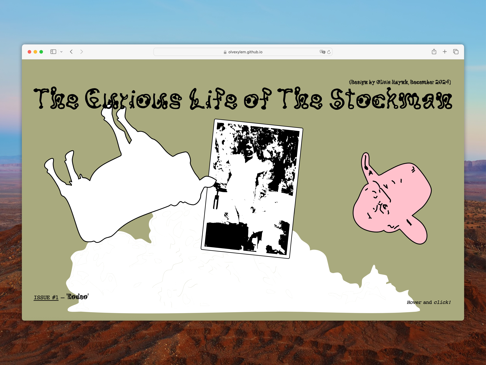
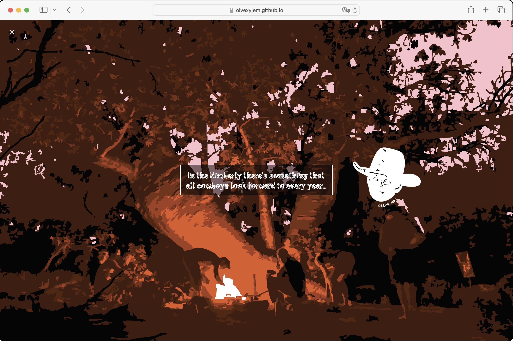
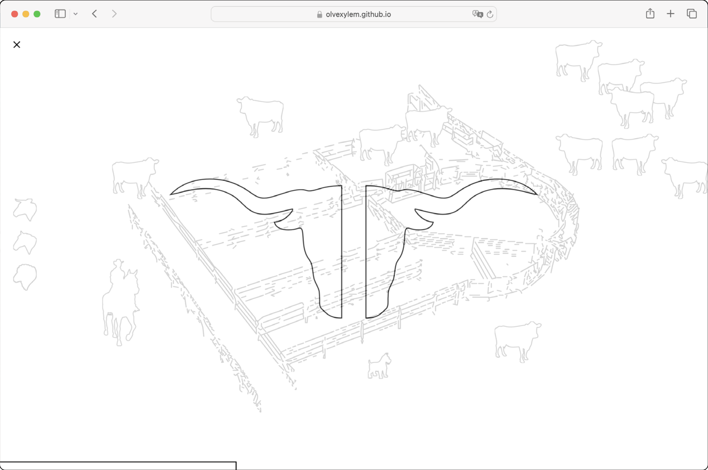
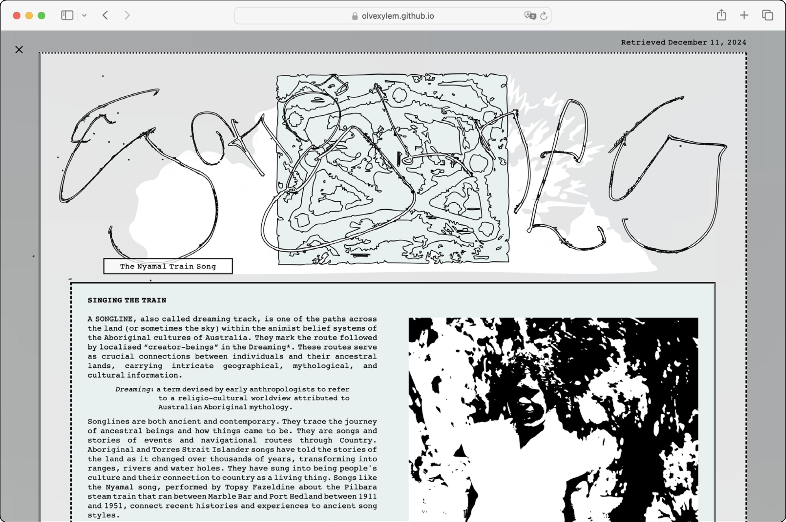
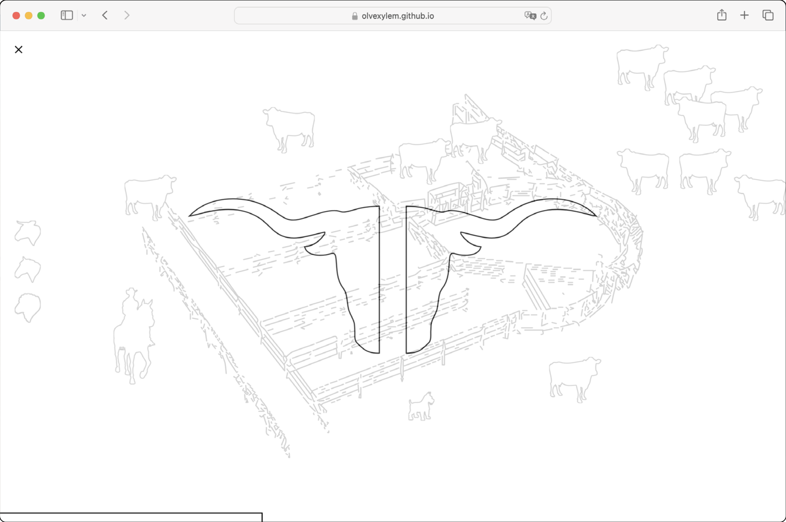
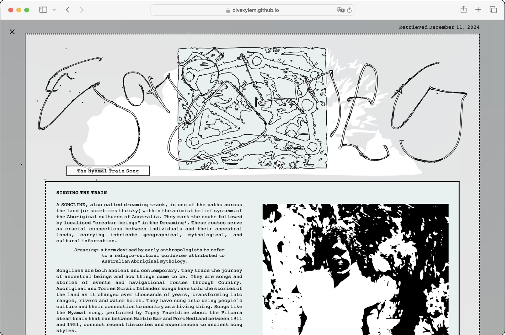
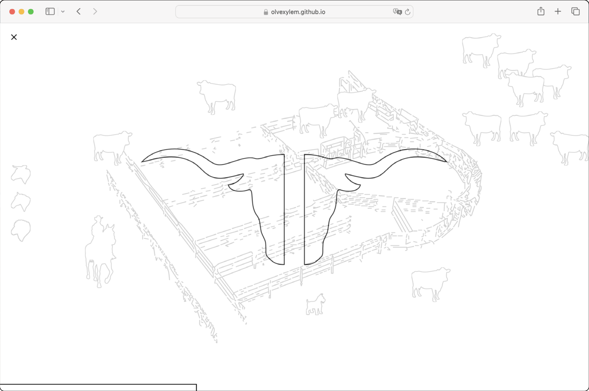
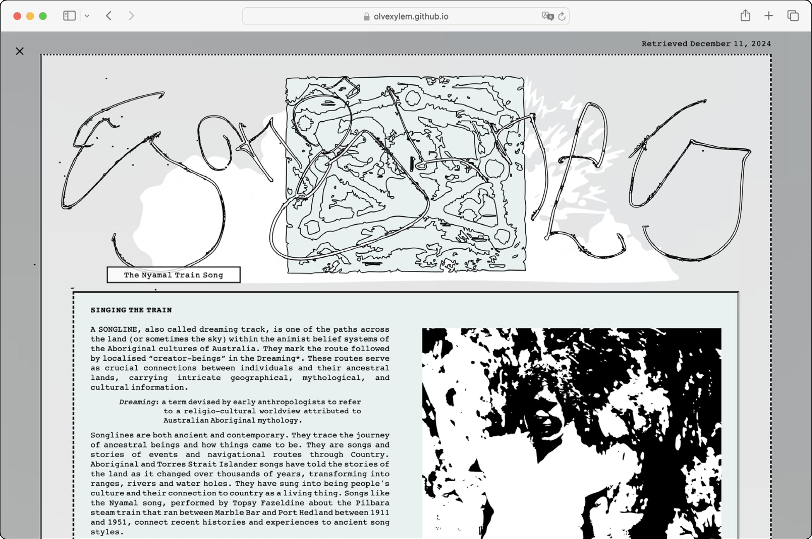

olvehyh
« The Curious Life of the Stockman »
A series of three webzines about curiousity and adventure through the lens of the Australian stockman,
in addition to being a personal tribute to the Aboriginal people and their culture.
*See Webzine here
*See Webzine here
Web development | Webzine | Graphic Design
3.9 MB | English
Den Haag 2024
Typeface: Kaerukaeru, Courier, 123 and...
Code Languages: HTML & CSS
3.9 MB | English
Den Haag 2024
Typeface: Kaerukaeru, Courier, 123 and...
Code Languages: HTML & CSS


 




